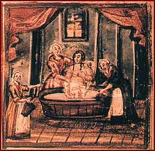

Ritual cleanliness is an obligation for women. The miniature, showing women in the
mikva
, or ritual bath, is an illustration from the book
Seder birkat ha-mazon
(
Grace After Meals
), published in Polna in the 18th century.